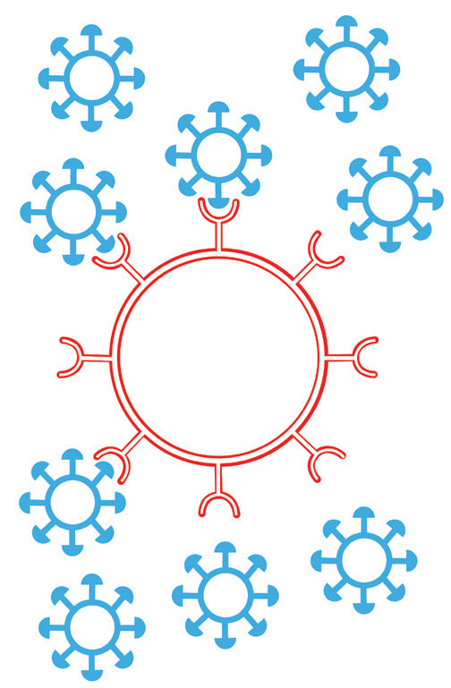

110
Student’s Book - Form Two
Biology for Secondary Schools
then enters the cell. Once inside the cell, the virus becomes part of the T-helper cell and replicates together with it as it undergoes division. This increases the number of HIV in the blood. The HIV destroys T-helper cells resulting in the reduction of the number of T-helper cells and reducing the CD4 count. Figure
5.11 shows HIV attacking the T-helper cell.
HIV
HIV attach to CD4 of T-helper cell
T-helper cell
CD4

Figure 5.11: HIV attacking the T-helper cell
HIV destroys T-helper cells in the following ways:
(i)
it reproduces inside the T-helper
cell and then ruptures the cell’s
membrane and the new viruses
are released;
(ii) it alters the T-helper cell so that
when it responds to an infection,
it kills itself instead of dividing to
form new cells;
(iii) it marks T-helper cells as targets
for destruction by other cells in
the immune system; and
(iv) it causes the fusion of many
T-helper cells to form a ‘giant’
cell. A giant cell can survive but
it cannot perform normal T-helper
cell functions.
Thus, HIV lowers the body’s immunity to a great extent making it vulnerable to opportunistic infections.
Platelets
Platelets are small fragments of cells produced in the bone marrow. They are also known as thrombocytes (Figure
5.12). They do not have nuclei and cannot reproduce.
08/04/2026 10:18:31